˚₊‧꒰ა. tastes to remember .໒꒱ ‧₊˚
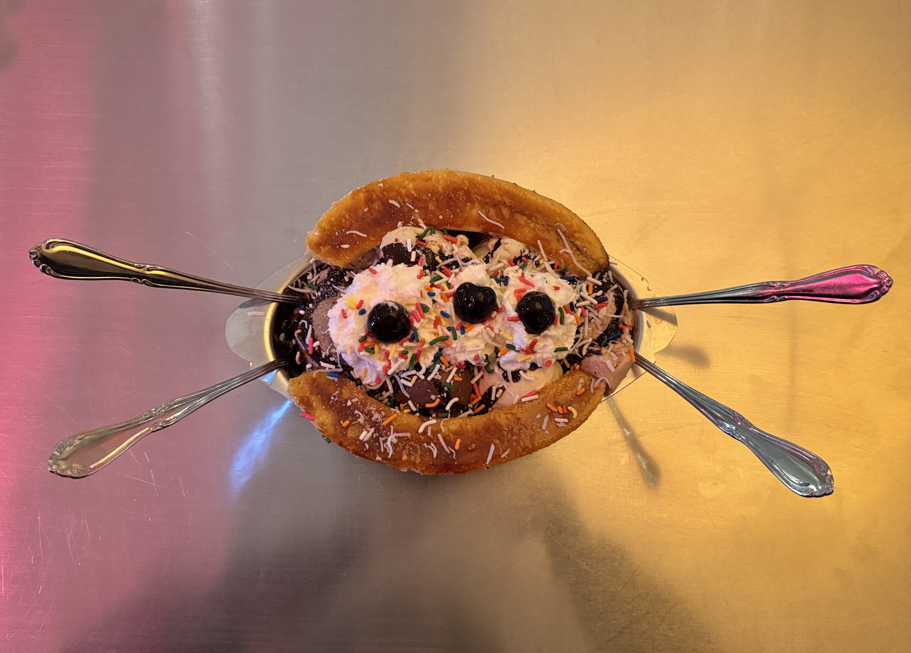
Fluffy McCloud's — Echo Park, LA Our go-to ice cream shop — a banana split when we're all home for break is a must. Recommended flavors include: cookies & cream, strawberry swan, rainwater sherbet, thelma vanilla, pistachiyoyoyoyo, & coffee.
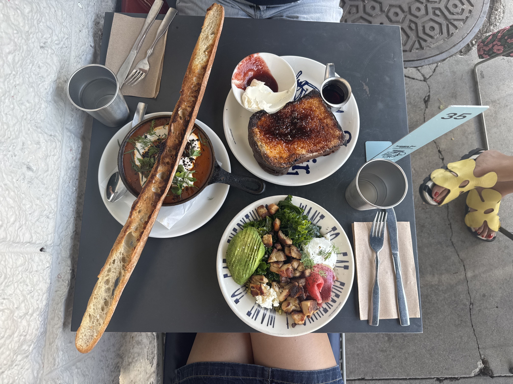
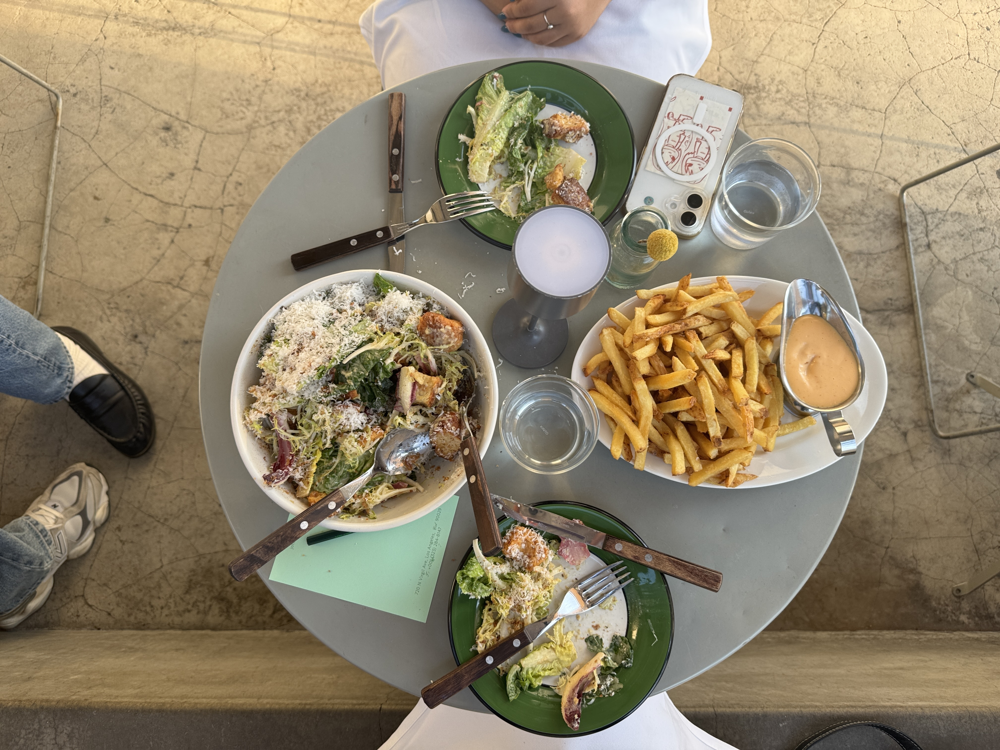
Sqirl — Virgil Village, LA My favorite restaurant in the entire world. My mom took me for the first time in 2018, it became a go-to to-go spot over quarantine, and has now grown into a beloved spot in my heart. Whenever I'm back home, my friends ask me to take them there.
Neighbors & Friends — LA The girls' final dinner of the summer at the new place in town. It is bomb.
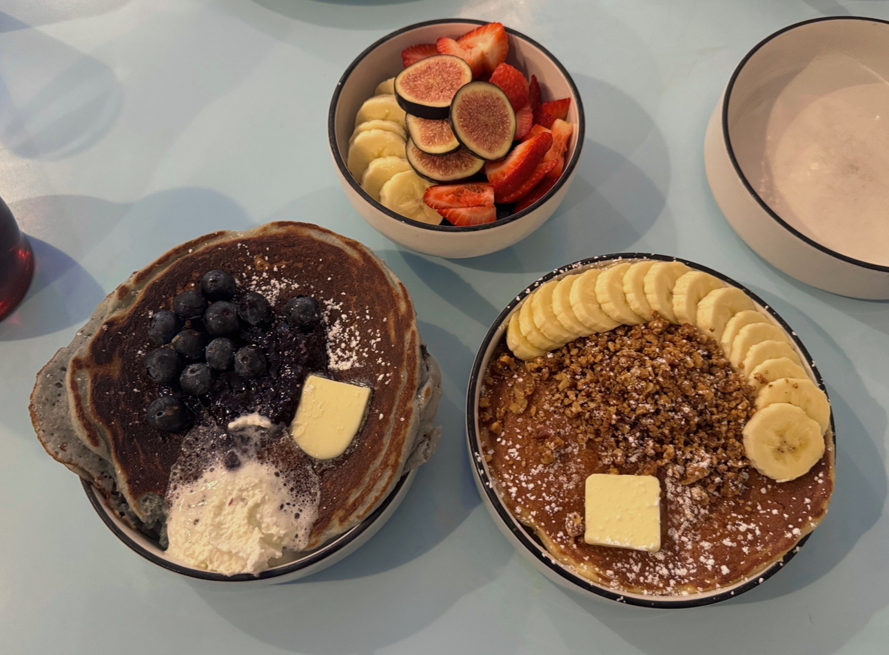
Baby Blue's Luncheonette — Brooklyn, NY To me, Baby Blue's is the current Sqirl of the east coast (meaning, it's pretty good). Some highlights include the baklava banana pancakes, the blueberry cornmeal pancakes, Plato's plate, and Zorba's plate.
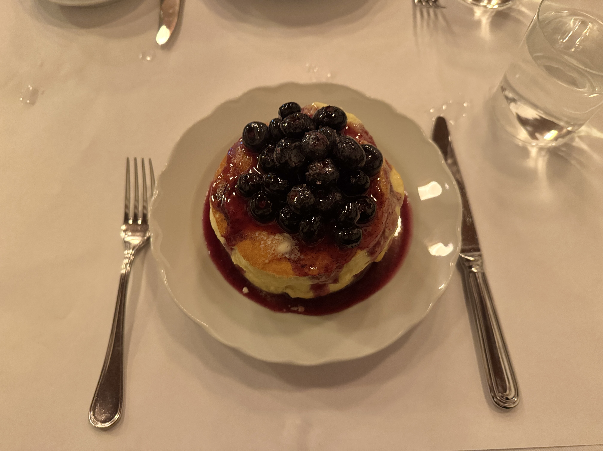
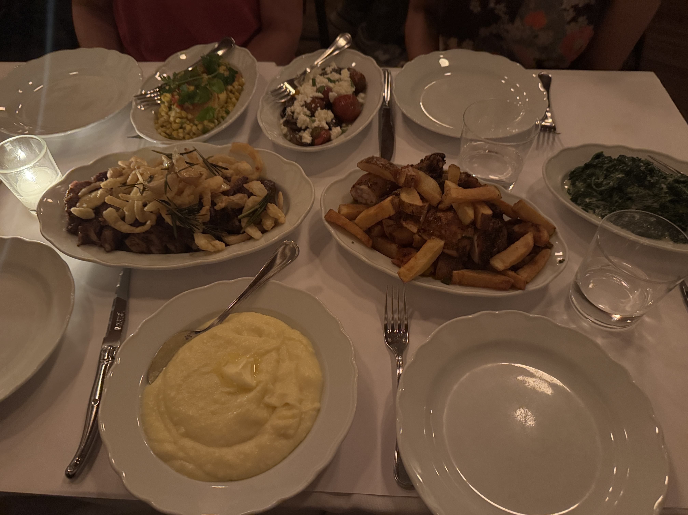
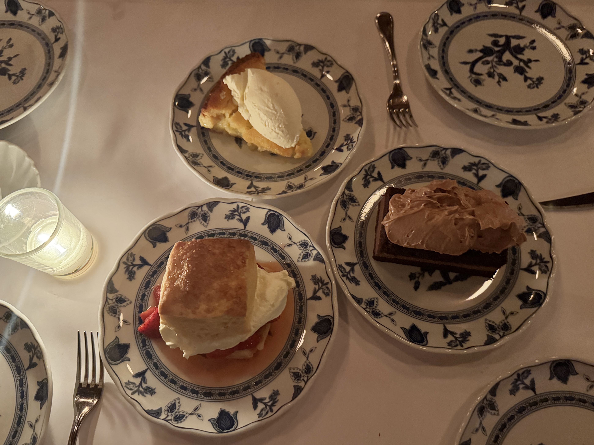
Commerce Inn — West Village, NY My family and I went here twice in one day the first time we tried it...that's how good it was. Their pancakses are dare I say some of the best in the city, and their evening service lives up to that statement as well.
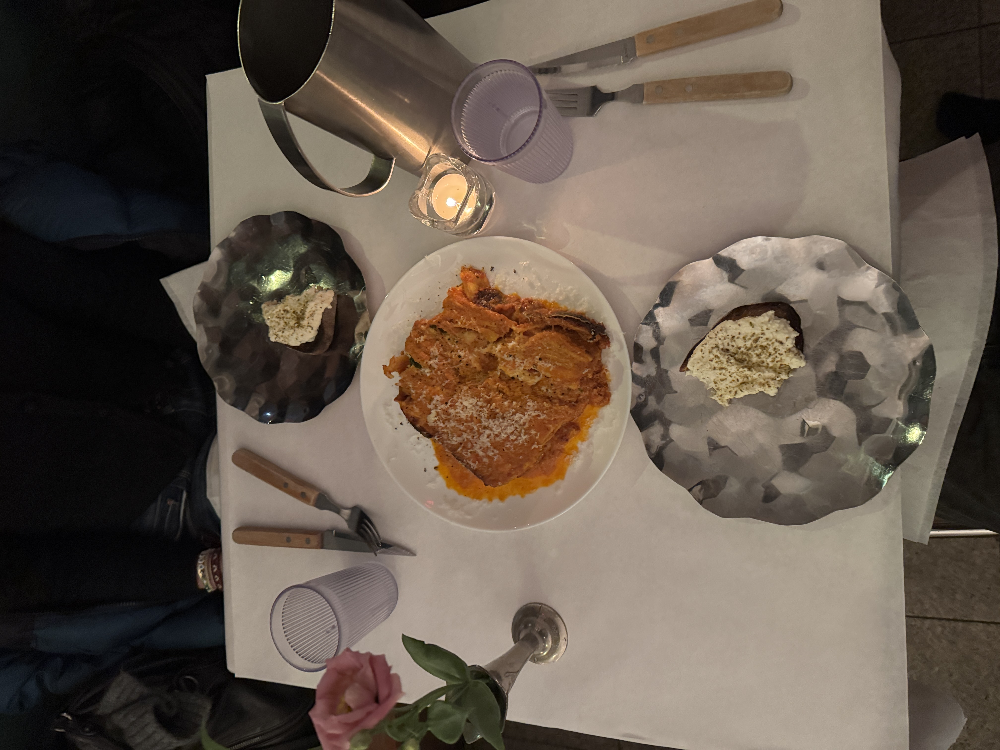
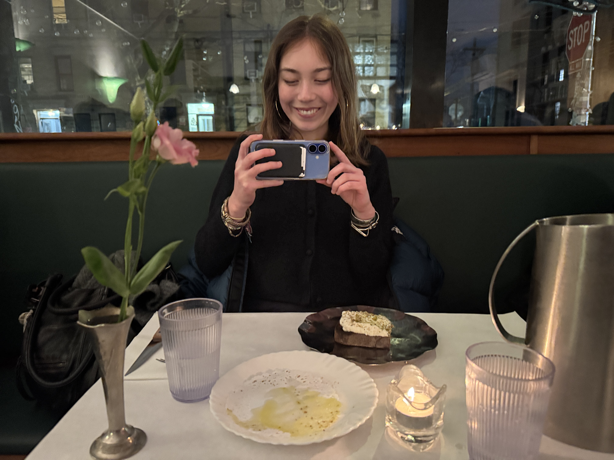
La Cantine — Bushwick Kaiya and I found this place via Instagram. They post their menu on social media almost daily, so you have to act quick. What initially got us hooked was their many rotating variations of tiramisu — our favorite so far might be the earl grey and lemon version.
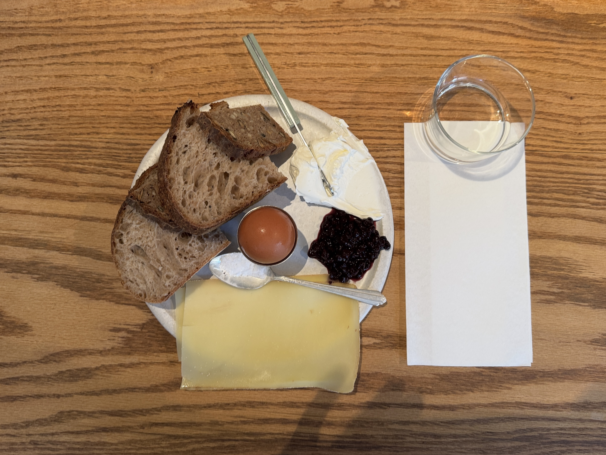
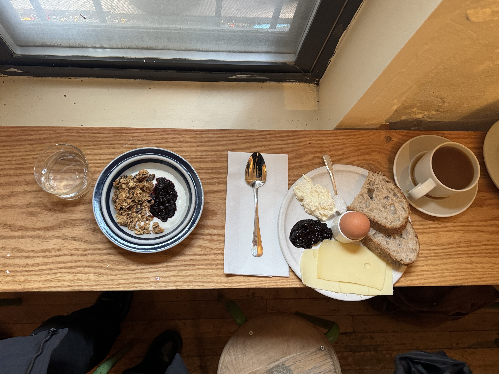
Gem Home — Nolita, NY
Scandinavian cafe in lower Manhattan; also the first place I found Sqirl jam in the city. It holds a dear place in my heart for that reason, though the prices are a bit egregious.